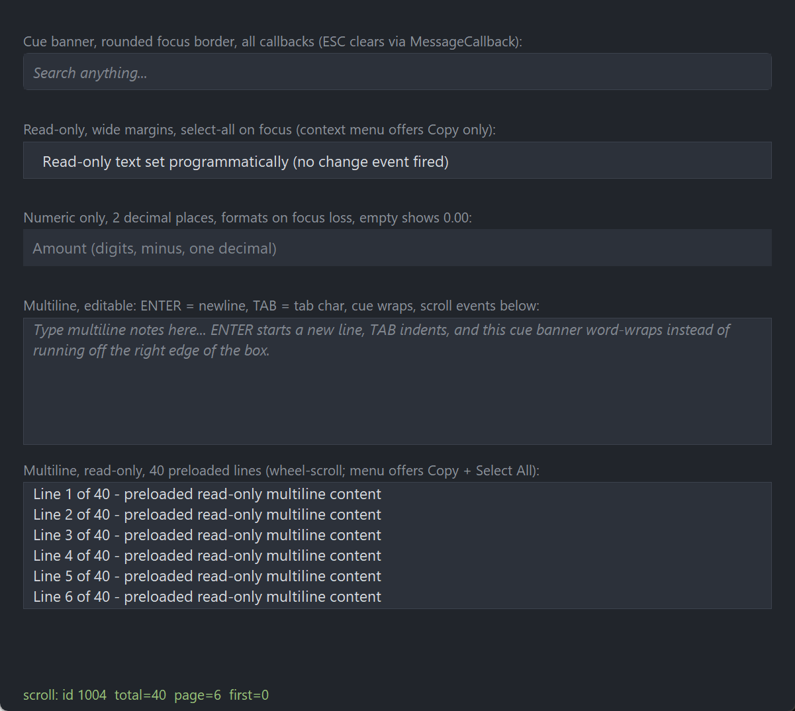

PsTextBox
A textbox control for FreeBASIC Win32 applications: a themeable frame of your own colours — border, rounded corners, outer fill — wrapped around a real RichEdit50W editor that does the typing, the selection, the clipboard and the undo.
It is the control you reach for when a plain EDIT gets you the behaviour but not the look. The frame is drawn by the control, so nothing about it depends on the visual style the user happens to be running, and every colour it paints is one you set. Inside the frame you get a cue banner with its own colour and font, vertically centred text on a single-line control, optional numeric-only input with a decimal-place limit, and a right-click menu that is itself an owner-drawn PsPopupMenu you can theme to match the rest of your application.
Single-line by default. Pass true at creation for a multiline control: word wrap, ENTER inserts a newline, TAB inserts a tab character, and the wheel scrolls. A multiline control never shows a native scrollbar — it exposes its scroll state in lines instead, shaped to be wired straight to an external scrollbar.
What it looks like

Five boxes, all on one subclassed RichEdit50W: a cue banner with its own colour and a rounded focus border; a read-only box with wide margins; a numeric-only box with two decimal places; a multiline editable box whose cue banner word-wraps; and a multiline read-only box preloaded with 40 lines. The green line at the bottom is the demo printing scroll events from the control's PsVScrollBar-shaped scroll API.
Requirements
Files to copy into your project:
| File | Purpose |
|---|---|
PsTextBox.bi | Declarations — types, callbacks, constants, function prototypes |
PsTextBox.inc | Implementation |
PsPopupMenu.bi | The owner-drawn floating menu used for the built-in right-click menu |
PsPopupMenu.inc | Its implementation |
PsBufferPaint.bi | The flicker-free drawing surface the frame is painted through |
PsBufferPaint.inc | Its implementation |
AfxNova is required. The control is built on CWindow, uses AfxNova\AfxRichEdit.inc for the RichEdit_* helpers and AfxNova\AfxWin.inc for clipboard access, and CBufferPaint draws through AfxNova\CGdiPlus.inc. Sources include AfxNova relative to the workspace root (#include once "AfxNova\CWindow.inc"), so builds need the workspace root on the include path:
fbc64.exe -i "C:\dev" main.basInclude order. PsTextBox.bi pulls in PsBufferPaint.bi and PsPopupMenu.bi itself, but the three implementation files must be included in dependency order:
#include once "PsBufferPaint.inc"
#include once "PsPopupMenu.inc" ' PsTextBox's built-in right-click menu runs on it
#include once "PsTextBox.inc"GDI+ must be running before the first repaint and must outlive the last one. The frame is rendered through GDI+, so bracket your message loop:
dim as ULONG_PTR gdipToken = AfxGdipInit()
' ... create windows, run the message loop ...
AfxGdipShutdown( gdipToken )AfxGdipShutdown must come after every window is destroyed, because each repaint builds and tears down a PsBufferPaint. If you also call CoInitialize, shut GDI+ down before CoUninitialize — GDI+ leans on COM.
Never name an identifier ok. GDI+ defines Ok = 0 as a Status enum value in namespace AfxNova, and hosts customarily say using AfxNova. An existing variable, parameter or function called ok becomes a duplicate definition the moment you adopt these files. Use bOK instead.
PsTextBox_FilterMessage in your message pump is mandatory. The right-click menu is a PsPopupMenu, which is not modal: its keyboard navigation and its dismissal on an outside click both live in that filter. Skip the call and the menu still opens and still paints, but it cannot be driven with the arrow keys or Enter, and it never closes when the user clicks elsewhere.
dim uMsg as MSG
do while GetMessage( @uMsg, null, 0, 0 )
if uMsg.message = WM_QUIT then exit do
if PsTextBox_FilterMessage( @uMsg ) then continue do
TranslateMessage @uMsg
DispatchMessage @uMsg
loopOne call serves every PsTextBox in the application: only one menu chain can be open at a time and the filter finds it. An application that also hosts a PsMenuBar calls that filter too; the two are independent and each stands down while the other's menu is up.
Tab navigation works without IsDialogMessage. The control's container carries WS_EX_CONTROLPARENT and the RichEdit child inside it carries WS_TABSTOP, so the dialog manager can see through the container to the tabstop — but you do not need the dialog manager for the common case, because a single-line control handles VK_TAB itself (GetNextDlgTabItem against the top-level ancestor, Shift+Tab for the previous stop).
If you do add IsDialogMessage, know what it costs you here: it claims VK_RETURN and VK_ESCAPE before the control sees them, which defeats the EnterPressedCallback and any ESC handling you have put in the message callback. The bundled demo deliberately runs without it.
A multiline control inserts a tab character on TAB and never moves focus. If Tab must leave a multiline box, veto WM_KEYDOWN / VK_TAB in the message callback and move focus yourself.
Quick start
' Create it. The control is created zero-sized and hidden.
dim as HWND hCtl = PsTextBox_Create( hWndParent, IDC_MYFORM_SEARCH )
' Fonts are yours: the control never creates or deletes an HFONT.
PsTextBox_SetFont( hCtl, ghFont(GUIFONT_10) )
PsTextBox_SetForeColor( hCtl, theme.ForeColor )
PsTextBox_SetBackColor( hCtl, theme.BackColorBox )
' Cue banner, shown whenever the buffer is empty. Its colour and font are its own.
PsTextBox_SetCueBannerText( hCtl, "Search anything..." )
PsTextBox_SetCueBannerColor( hCtl, theme.ForeColorCue )
PsTextBox_SetCueBannerFont( hCtl, ghFont(CUEFONT_10) )
' Frame. Every pixel value is a raw device pixel: DPI-scale at the call site.
PsTextBox_SetBorderColor( hCtl, theme.BorderColor )
PsTextBox_SetFocusBorderColor( hCtl, theme.FocusAccent )
PsTextBox_SetCornerRadius( hCtl, pWindow->ScaleX(4) )
PsTextBox_SetOuterBackColor( hCtl, theme.BackColorWindow ) ' corners blend into the form
PsTextBox_SetMargins( hCtl, pWindow->ScaleX(8), pWindow->ScaleX(8) )
' Events.
PsTextBox_SetChangeCallback( hCtl, @TextBox_ChangeCallback )
PsTextBox_SetEnterPressedCallback( hCtl, @TextBox_EnterPressedCallback )
' Place it. SWP_SHOWWINDOW is required -- the control is created hidden.
SetWindowPos( hCtl, 0, x, y, nWidth, nHeight, SWP_NOZORDER or SWP_SHOWWINDOW )And the callbacks:
sub TextBox_ChangeCallback( byval hTextBox as HWND )
' USER edits only -- typing, cut, paste, undo. PsTextBox_SetText never lands here.
gFilter = PsTextBox_GetText( hTextBox )
end sub
sub TextBox_EnterPressedCallback( byval hTextBox as HWND )
' Single-line only. The keypress itself is always swallowed: no newline, no beep.
RunSearch( PsTextBox_GetText( hTextBox ) )
end subPlus the mandatory PsTextBox_FilterMessage line in the message pump, shown above.
That is the whole minimum. Everything below is refinement.
Concepts
The handle is a real HWND
PsTextBox_Create returns an ordinary window handle, and every PsTextBox_* function takes it. It is not an opaque type, so you can treat the control as the window it is — SetWindowPos to place and size it, ShowWindow to show it, GetDlgItem to find it by the CtrlID you passed at creation.
There is a real editor inside
The control is a container window that owns the chrome and the geometry, plus a subclassed RichEdit50W child that does all the editing. RichEdit rather than EDIT because it supports vertical centring of the text (EM_SETRECT) and per-control colours (EM_SETCHARFORMAT, EM_SETBKGNDCOLOR) without owner-draw.
Two consequences you will meet immediately:
GetFocus() = hTextBoxis always false. Focus sits on the child. UsePsTextBox_HasFocus. CallingSetFocuson the container, or sending itWM_SETFOCUS, redirects focus to the child for you.- The child's geometry is derived, never assigned. Its rect is the container's client rect inset by the border width on all four sides. Resizing the control, or changing the border width, recomputes it and re-applies the vertical centring and the margins.
PsTextBox_GetRichEditHandle is the escape hatch for RichEdit-specific messages the flat API and the message door below do not cover.
The message door
Sending a classic edit-control message to the control works as if it were the edit control itself. The container forwards:
| Sent to the control | Behaviour |
|---|---|
EM_GETSEL … EM_GETIMESTATUS | Forwarded verbatim to the RichEdit |
WM_GETTEXT, WM_GETTEXTLENGTH, WM_CUT, WM_COPY, WM_PASTE, WM_CLEAR, WM_UNDO | Forwarded verbatim |
WM_SETTEXT, EM_REPLACESEL | Forwarded, and treated as programmatic — no change callback fires |
EM_SETMARGINS | Intercepted, so the values are stored and survive later geometry and font changes |
WM_SETFONT | Runs PsTextBox_SetFont |
WM_GETFONT | Returns the stored text font |
Same operation, two doors: the message for a separate control or window, the function for an in-process host.
dim as long n = SendMessage( hCtl, WM_GETTEXTLENGTH, 0, 0 )
SendMessage( hCtl, EM_SETSEL, 0, 9 )It is created zero-sized and hidden
PsTextBox_Create gives the container the styles WS_CHILD, WS_CLIPSIBLINGS and WS_CLIPCHILDREN, with WS_EX_CONTROLPARENT as its extended style. WS_VISIBLE is deliberately absent, so a newly created control shows nothing until you size it. Include SWP_SHOWWINDOW in your SetWindowPos — and note that the RichEdit child is shown by the first resize, so a control that is never sized never displays its editor at all.
Single-line and multiline are different controls
The choice is made at PsTextBox_Create and is fixed for the control's lifetime — ES_MULTILINE cannot be toggled on a live window. What changes:
| Single-line | Multiline | |
|---|---|---|
| Text layout | One line, vertically centred in the frame | Word-wrapped from the top, no vertical centring |
| ENTER | Swallowed; fires EnterPressedCallback | Inserts a newline; the callback never fires |
| TAB | Moves focus to the next / previous tabstop | Inserts a tab character |
| Horizontal scroll | ES_AUTOHSCROLL | None — the text wraps instead |
| Vertical scroll | n/a | Wheel, keys and caret; no native scrollbar |
| Numeric mode | Available | Refused — PsTextBox_SetNumericMode is a no-op |
| Cue banner | One line, unclipped, on the centred baseline | Word-wrapped at the top left, clipped to the text rect |
Pixels, and who scales them
Every pixel value passed to this API is a raw device pixel. Margins, border width and corner radius are all taken verbatim; the control never scales a caller's value. DPI-scale at the call site, typically pWindow->ScaleX(...) / ScaleY(...).
That is not an oversight: margins go straight into EM_SETMARGINS, so a control-side scale would both lie to anything reading EM_GETMARGINS and double-scale a host that had already scaled.
One format for the whole buffer
The editor runs in TM_PLAINTEXT mode. That is what gives you one character format across the entire buffer — the control never colours individual characters — and what makes pasted text shed any rich formatting it arrived with.
PsTextBox_SetFont and PsTextBox_SetForeColor are converted together into a single CHARFORMATW (face, size, charset, bold, italic, underline, strikeout, colour) and applied to the whole buffer with SCF_ALL. There is no way to format a run of characters differently, and that is by design.
TM_PLAINTEXT is also the reason PsTextBox_SetTextAlign is more expensive than it looks — see that function, and Behaviour and limits.
Programmatic changes are silent
PsTextBox_SetText, PsTextBox_ReplaceSel, PsTextBox_Clear, PsTextBox_SetValue, the numeric reformat the control performs on focus loss, and a WM_SETTEXT or EM_REPLACESEL sent through the message door all leave the change callback alone. It reports user interaction — typing, cut, paste, undo — and nothing else, which means you can call a setter from inside your own change handler without recursing.
The scroll-changed callback is the deliberate exception; see Callbacks.
The cue banner
Drawn by the control whenever the buffer is empty, focused or not — the caret blinks over it. It is painted at the editor's formatting rect, so it sits exactly where typed text will appear, including the vertical centring on a single-line control. Its colour is independent of the text forecolor, and its font falls back to the text font when you do not set one.
The frame
The container paints the outer fill across its whole client area first, then the rounded frame on top of it. The pixels outside the corner arcs keep showing the outer fill — pass your form's background colour to PsTextBox_SetOuterBackColor and rounded corners blend into it instead of showing white.
The border colour switches to the focus border colour while the editor has focus. A border width of 0 draws no border at all, and the child then fills the entire client area.
Lifetime
The control frees itself when its window is destroyed, including the PsPopupMenu window behind the right-click menu — that is a WS_POPUP window, not a child, so it would not go with the window tree otherwise. It owns no host resources: every HFONT you hand it stays yours to delete. Destroy the parent and you are done.
Behaviour and limits
Firm properties of the control, not settings:
PsTextBox_SetTextAligndiscards the undo history on a control that already has content. Set it at setup time, before anything has been typed.TM_PLAINTEXTrefusesEM_SETPARAFORMAToutright and silently, so the only sequence the editor accepts is: save the text, empty the buffer, switch toTM_RICHTEXT, apply the format, switch back, restore the text — and then empty the undo buffer, because the undo stack now spans a rewrite the user never made. On an empty control that costs nothing and nobody notices.- The
PsTextBox_FilterMessagepump call is not optional. Without it the right-click menu has no keyboard navigation and never dismisses on an outside click. - Multiline is a creation-time choice. There is no setter, because
ES_MULTILINEcannot be toggled on a live window. - Numeric mode is single-line only.
PsTextBox_SetNumericModereturns without doing anything on a multiline control, and the getter still reads FALSE afterwards. EnterPressedCallbackis single-line only, and the ENTER keypress is always swallowed there — no newline, no beep — whether or not a callback is installed.- ESCAPE is swallowed in both line modes, because the editor would beep. Act on it, if you want to, from the message callback.
- There is no horizontal scroll API. A single-line control auto-scrolls horizontally on its own (
ES_AUTOHSCROLL); a multiline control wraps instead, so there is nothing to scroll. - A multiline control never shows a native scrollbar. No scrollbar styles are applied. Drive an external one through
ScrollChangedCallback/PsTextBox_GetVScrollInfo/PsTextBox_ScrollToLine. - The control implements multiline wheel scrolling itself, converting the delta to
EM_LINESCROLLand honouringSPI_GETWHEELSCROLLLINES(includingWHEEL_PAGESCROLL, which scrolls a page per notch). The RichEdit's own wheel handling is bypassed entirely. Sub-notch deltas from a high-precision wheel or trackpad accumulate, so a slow swipe scrolls smoothly instead of doing nothing. - No mouse capture is taken. The RichEdit manages its own selection-drag capture internally, which is why a message callback's return value is honoured uniformly — there is no invariant of the control's that a suppressed message could strand.
- No per-character formatting. One font and one forecolor for the whole buffer, guaranteed by
TM_PLAINTEXT. - No vertical alignment setting. A single-line control's text is always vertically centred; a multiline control's always starts at the top.
- Alignment is measured between the margins, not between the border edges. A centred value in a control with lopsided margins sits off-centre by design. Give it equal margins if you want it optically centred.
- An unrecognized alignment value falls back to
TXT_ALIGN_LEFTrather than being rejected, so the control's alignment can never silently disagree with what the host thinks it set. - The right-click menu is rebuilt on every open, from the current selection, clipboard and read-only state. When nothing qualifies — no selection, nothing to paste, no text — no menu appears at all.
- Only one popup chain may be open per application. A second textbox's menu closes the first's.
API reference
Creation
| Function | Description |
|---|---|
PsTextBox_Create( hWndParent, CtrlID, bMultiline = false ) as HWND | Creates the control as a child of hWndParent and returns its window handle. CtrlID becomes the container's GWLP_ID, so GetDlgItem finds it. bMultiline is fixed for the control's lifetime. Created zero-sized and hidden — place it with SetWindowPos including SWP_SHOWWINDOW. |
PsTextBox_GetRichEditHandle( hTextBox ) as HWND | The RichEdit50W child. For RichEdit-specific messages the flat API and the message door do not cover. |
PsTextBox_GetMultiline( hTextBox ) as boolean | TRUE for a multiline control. Set at creation, never changes. |
PsTextBox_HasFocus( hTextBox ) as boolean | TRUE when the editor owns the keyboard focus. Use this — focus lives on the child, so GetFocus() = hTextBox is always false. |
Text and content
| Function | Description |
|---|---|
PsTextBox_GetText( hTextBox ) as DWSTRING | The whole buffer. |
PsTextBox_SetText( hTextBox, Text ) as boolean | Replaces the whole buffer. Silent — no change callback. Returns FALSE only when the handle is not a PsTextBox. |
PsTextBox_GetTextLength( hTextBox ) as integer | Length in characters. |
PsTextBox_GetSelText( hTextBox ) as DWSTRING | The selected text, "" when there is no selection. |
PsTextBox_ReplaceSel( hTextBox, Text ) as boolean | Replaces the selection, or inserts at the caret when there is none. Silent, but undoable. |
PsTextBox_Clear( hTextBox ) as boolean | Empties the buffer. Silent — it is PsTextBox_SetText( h, "" ). |
Selection
Positions are 0-based character indices.
| Function | Description |
|---|---|
PsTextBox_GetSel( hTextBox, byref nStart, byref nEnd ) | The selection range. nStart = nEnd means a caret with nothing selected. Both come back 0 when the handle is not a PsTextBox. |
PsTextBox_SetSel( hTextBox, nStart, nEnd ) | Sets the selection. nEnd = -1 selects through the end of the text. |
PsTextBox_SelectAll( hTextBox ) | Selects everything — PsTextBox_SetSel( h, 0, -1 ). |
Edit behaviour
| Function | Description |
|---|---|
PsTextBox_GetLimitText( hTextBox ) as integer | The current text-length limit, in characters. |
PsTextBox_SetLimitText( hTextBox, nLimit ) | Sets the limit. 0 restores the default limit. |
PsTextBox_GetReadOnly( hTextBox ) as boolean | Read-only state, read from the editor's ES_READONLY style. |
PsTextBox_SetReadOnly( hTextBox, bReadOnly ) as boolean | Sets it; returns TRUE on success. A read-only control still allows selection, and its context menu still offers Copy and Select All. |
PsTextBox_GetModify( hTextBox ) as boolean | The editor's modified flag — set by user edits, cleared by a WM_SETTEXT. |
PsTextBox_SetModify( hTextBox, bModified ) | Sets or clears that flag. |
PsTextBox_SetPasswordChar( hTextBox, wchChar ) | The character displayed in place of each typed one. 0 turns password mode off. Repaints the editor. |
PsTextBox_GetSelectOnFocus( hTextBox ) as boolean | Whether the control selects everything when it gains focus. Default FALSE. |
PsTextBox_SetSelectOnFocus( hTextBox, bSelect ) | Turns that on. It applies to Tab and to a programmatic SetFocus; a mouse click still places the caret at the click point, because the click's own caret placement runs after the focus change and wins. |
PsTextBox_GetMargins( hTextBox, byref nLeft, byref nRight ) | The stored left and right text margins, in pixels. |
PsTextBox_SetMargins( hTextBox, nLeft, nRight ) | Sets them (EM_SETMARGINS) and repaints. Raw pixels — DPI-scale at the call site. They are stored, so they survive later font and geometry changes, which re-apply them. |
Clipboard and undo
| Function | Description |
|---|---|
PsTextBox_Cut( hTextBox ) | Cuts the selection to the clipboard. |
PsTextBox_Copy( hTextBox ) | Copies the selection to the clipboard. |
PsTextBox_Paste( hTextBox ) | Pastes. In numeric mode the paste is vetted first and rejected wholesale if the result would not be a valid number — nothing is ever half-pasted. |
PsTextBox_CanPaste( hTextBox ) as boolean | Whether the clipboard holds something the editor would accept. |
PsTextBox_Undo( hTextBox ) as boolean | Undoes the last edit; TRUE if something was undone. |
PsTextBox_CanUndo( hTextBox ) as boolean | Whether there is anything to undo. |
These six drive the editor exactly as Ctrl+X / Ctrl+C / Ctrl+V / Ctrl+Z would, so unlike the text setters they are not silent — the change callback fires for them.
Numeric mode
Single-line only. The accepted grammar is: an optional leading minus, digits, and at most one decimal point followed by at most DecimalPlaces fractional digits. Typing is filtered character by character against the text as it will be after the pending selection is replaced, and a paste is validated as a whole. Control characters below 32 always pass, so backspace and the Ctrl+C / V / X / Z / A shortcuts keep working.
On focus loss a non-empty value is reformatted to exactly DecimalPlaces ("5." becomes "5.00"), silently, and before the focus callback runs — so a host reading the text there sees the formatted value. An empty box stays empty, and the cue banner shows, unless ZeroWhenEmpty is on.
| Function | Description |
|---|---|
PsTextBox_GetNumericMode( hTextBox ) as boolean | Whether numeric filtering is on. Default FALSE. |
PsTextBox_SetNumericMode( hTextBox, bEnable ) | Turns it on or off. A no-op on a multiline control — the getter still reads FALSE afterwards. Does not reformat whatever is already in the box. |
PsTextBox_GetDecimalPlaces( hTextBox ) as integer | The fractional-digit limit. Default 2. |
PsTextBox_SetDecimalPlaces( hTextBox, nPlaces ) | Sets it; clamped to a minimum of 0, where 0 means integers only and the decimal point is rejected outright. Does not reformat existing text. |
PsTextBox_GetValue( hTextBox ) as double | The text as a double. An empty box, "-" and "." all read as 0. |
PsTextBox_SetValue( hTextBox, nValue ) as boolean | Sets the text from a double, formatted to DecimalPlaces and without thousands separators (a comma is not an accepted input character). Silent. |
PsTextBox_GetZeroWhenEmpty( hTextBox ) as boolean | Whether an empty numeric box displays the formatted zero. Default FALSE. |
PsTextBox_SetZeroWhenEmpty( hTextBox, bEnable ) | Turns it on. Stamps "0.00" immediately if the box is in numeric mode, currently empty and not focused — a focused box is left alone because the user may be mid-entry, and its next focus loss will stamp it. It trumps the cue banner, which effectively never shows again once the box has been visited. |
Multiline and scrolling
Units are lines, shaped 1:1 for an external scrollbar: on each ScrollChangedCallback read the three numbers and push them into the scrollbar's range, and wire the scrollbar's position callback back to PsTextBox_ScrollToLine.
| Function | Description |
|---|---|
PsTextBox_GetVScrollInfo( hTextBox, byref nTotalLines, byref nLinesPerPage, byref nFirstVisibleLine ) | The whole vertical scroll state. nLinesPerPage is the formatting-rect height divided by the text font's line height (tmHeight + tmExternalLeading) — a partial line at the bottom is not counted. All three come back 0 when the control has no usable geometry yet, so call it after the control has been sized. A single-line control reports one total line and a first visible line of 0. |
PsTextBox_ScrollToLine( hTextBox, nLine ) | Scrolls so nLine (0-based) becomes the first visible line. Negative values are clamped to 0, the editor clamps overscroll at the other end, and a request for the line already at the top does nothing. |
Appearance
All fonts are caller-owned HFONTs — the control never deletes one.
| Function | Description |
|---|---|
PsTextBox_GetFont( hTextBox ) as HFONT | The text font. 0 means the stock DEFAULT_GUI_FONT is in use. |
PsTextBox_SetFont( hTextBox, hFont ) as boolean | Sets it, rebuilds the character format for the whole buffer, redoes the single-line vertical centring, re-applies the margins and repaints. |
PsTextBox_GetForeColor( hTextBox ) as COLORREF | The text colour. |
PsTextBox_SetForeColor( hTextBox, clr ) as COLORREF | Sets it and re-applies the character format. Returns the previous colour. |
PsTextBox_GetBackColor( hTextBox ) as COLORREF | The editor's background colour. |
PsTextBox_SetBackColor( hTextBox, clr ) as COLORREF | Sets it (EM_SETBKGNDCOLOR) and repaints. Returns the previous colour. |
PsTextBox_GetCueBannerText( hTextBox ) as DWSTRING | The cue banner text; "" means no banner. |
PsTextBox_SetCueBannerText( hTextBox, Text ) | Sets it and repaints. Shown whenever the buffer is empty, focused or not. |
PsTextBox_GetCueBannerColor( hTextBox ) as COLORREF | The banner's colour. |
PsTextBox_SetCueBannerColor( hTextBox, clr ) | Sets it and repaints. Independent of the text forecolor. |
PsTextBox_GetCueBannerFont( hTextBox ) as HFONT | The banner's font. 0 means it uses the text font. |
PsTextBox_SetCueBannerFont( hTextBox, hFont ) | Sets it and repaints. Pass 0 to fall back to the text font. |
PsTextBox_GetTextAlign( hTextBox ) as long | TXT_ALIGN_LEFT (the default), TXT_ALIGN_CENTER or TXT_ALIGN_RIGHT. |
PsTextBox_SetTextAlign( hTextBox, nAlign ) | Sets the horizontal alignment of the whole buffer, in both line modes, and it survives every later SetText. Set it before the control has content. Applying it rewrites the buffer — save, clear, switch to rich-text mode, apply, switch back, restore — because TM_PLAINTEXT refuses EM_SETPARAFORMAT silently, and that rewrite discards the undo history. Free on an empty control. Centring happens between the margins, not the border edges. An unrecognized value falls back to LEFT. |
PsTextBox_GetBorderColor( hTextBox ) as COLORREF | The frame colour used while the control does not have focus. |
PsTextBox_SetBorderColor( hTextBox, clr ) | Sets it and repaints. |
PsTextBox_GetFocusBorderColor( hTextBox ) as COLORREF | The frame colour used while the editor has focus. |
PsTextBox_SetFocusBorderColor( hTextBox, clr ) | Sets it and repaints. |
PsTextBox_GetBorderWidth( hTextBox ) as integer | The frame thickness in pixels. |
PsTextBox_SetBorderWidth( hTextBox, nWidth ) | Sets it; clamped to a minimum of 0, where 0 means no border at all. Repositions the editor, whose inset derives from this value. Raw pixels. |
PsTextBox_GetCornerRadius( hTextBox ) as integer | The corner radius in pixels. 0 means square corners. |
PsTextBox_SetCornerRadius( hTextBox, nRadius ) | Sets it; clamped to a minimum of 0. The arcs are antialiased, so a large radius does not look stepped. Raw pixels. |
PsTextBox_GetOuterBackColor( hTextBox ) as COLORREF | The colour filling the pixels outside the corner arcs. |
PsTextBox_SetOuterBackColor( hTextBox, clr ) | Sets it and repaints. Pass the host's background colour so rounded corners blend into the form. |
PsTextBox_SetMenuText( hTextBox, CutText, CopyText, PasteText, SelectAllText = "" ) | Localizes the built-in context menu. An empty SelectAllText leaves the current Select All label alone. |
Context menu and the message pump
| Function | Description |
|---|---|
PsTextBox_FilterMessage( pMsg as MSG ptr ) as boolean | Mandatory in the message pump. Returns TRUE when the open menu consumed the message, in which case do not translate or dispatch it. One call serves every PsTextBox in the application, and costs one comparison when no menu is open. |
PsTextBox_GetContextMenu( hTextBox ) as HWND | The control's PsPopupMenu window, created during PsTextBox_Create and stable for the control's lifetime. Style it once at startup with the usual PsPopupMenu setters (colours, fonts, glyphs, item height) and it will match the rest of your menus; left alone it renders with PsPopupMenu's own defaults. The labels are rebuilt on every open; colours and fonts are not. |
PsTextBox_CloseContextMenu() | Dismisses whichever PsTextBox menu is open, anywhere in the application. Silent — no select callback fires. For a global "close every menu" moment: application deactivation, or a modal dialog about to open. Takes no handle. |
Callback registration
| Function | Description |
|---|---|
PsTextBox_SetChangeCallback( hTextBox, usersub ) | Told when the user changed the text. |
PsTextBox_SetFocusCallback( hTextBox, usersub ) | Told when the editor gains or loses focus. |
PsTextBox_SetEnterPressedCallback( hTextBox, usersub ) | Told when ENTER is pressed. Single-line only. |
PsTextBox_SetMessageCallback( hTextBox, userfunc ) | Installs an observer, with veto, for key, mouse, focus and context-menu messages. |
PsTextBox_SetScrollChangedCallback( hTextBox, usersub ) | Told when the vertical scroll state may have changed. Multiline only. |
All five are optional and independent.
Colors
There is no colour struct. Each colour is its own property with its own getter and setter, and each ships with a usable light-theme default, so a control you never colour still looks right.
| Property | Paints | Default |
|---|---|---|
ForeColor | All text in the buffer — one colour, no exceptions | BGR(0,0,0) |
BackColor | The editor's background, inside the frame | BGR(255,255,255) |
CueColor | The cue banner, while the buffer is empty | BGR(128,128,128) |
BorderColor | The frame, while the control does not have focus | BGR(122,122,122) |
FocusBorderColor | The frame, while the editor has focus | BGR(0,120,215) |
OuterBackColor | The whole client area underneath the frame — visible only in the pixels outside the corner arcs | BGR(255,255,255) |
Which colour wins
The frame takes exactly one colour per repaint:
editor has focus -> FocusBorderColor
otherwise -> BorderColorThere is no hot, pressed or disabled variant of any of these. The control does not track hover, and disabling it is the host's business — EnableWindow on the container or on the editor — which is why there is no disabled colour to configure.
The paint order is: OuterBackColor across the whole client, then the rounded frame filled with BackColor and stroked in whichever border colour applies. Where the border width is 0 the frame is filled and not stroked, and the editor covers the whole client anyway.
CueColor is independent of ForeColor on purpose: a cue banner that is simply the text colour reads as content rather than as a hint.
Callbacks
Change
type TXT_ChangeCallbackSub as sub( byval hTextBox as HWND )The text changed because of user interaction — typing, cut, paste, undo. Read the new text with PsTextBox_GetText.
It never fires for PsTextBox_SetText, PsTextBox_ReplaceSel, PsTextBox_Clear, PsTextBox_SetValue, a WM_SETTEXT or EM_REPLACESEL sent through the message door, the numeric reformat on focus loss, or the buffer rewrite PsTextBox_SetTextAlign performs. That is what makes it safe to call a setter from inside this handler.
Focus
type TXT_FocusCallbackSub as sub( byval hTextBox as HWND, byval bGotFocus as boolean )The editor gained (bGotFocus = true) or lost (false) the keyboard focus. In numeric mode the value has already been reformatted by the time you are called on a focus loss, so the text you read here is the formatted one. The control has also already invalidated itself for the border-colour switch.
Enter pressed
type TXT_EnterPressedCallbackSub as sub( byval hTextBox as HWND )The user pressed ENTER. Single-line only — in a multiline control ENTER inserts a newline and this never fires.
The keypress itself is always swallowed, whether or not a callback is installed: no newline is inserted and the editor does not beep.
Scroll changed
type TXT_ScrollChangedCallbackSub as sub( byval hTextBox as HWND )The vertical scroll state may have changed. Multiline only. It is relayed from the editor's EN_UPDATE, which fires on any display update — typing, a programmatic SetText, scrolling by wheel, key or caret movement — and the control's wheel handler calls it directly as well.
Deliberately not gated the way the change callback is: a programmatic SetText changes the line count, and a scrollbar has to hear about that. Treat it as "re-read the numbers", not as "the user scrolled":
sub TextBox_ScrollChangedCallback( byval hTextBox as HWND )
dim as integer nTotal, nPage, nFirst
PsTextBox_GetVScrollInfo( hTextBox, nTotal, nPage, nFirst )
PsVScrollBar_SetRange( ghScrollBar, nTotal, nPage, nFirst )
end subMessage
type TXT_MessageCallbackFunc as function( byval m as PSTEXTBOX_MESSAGEINFO ptr ) as booleanObserves messages arriving at the editor before the control acts on them. Return TRUE to suppress both the control's handling and the editor's own; FALSE to let it proceed.
PSTEXTBOX_MESSAGEINFO:
| Field | Meaning |
|---|---|
hTextBox | The control (container) handle, not the RichEdit child |
uMsg | The message |
wParam | Its first parameter |
lParam | Its second parameter |
Only these messages are reported:
WM_KEYDOWN, WM_KEYUP, WM_CHAR, WM_LBUTTONDOWN, WM_LBUTTONUP, WM_LBUTTONDBLCLK, WM_RBUTTONDOWN, WM_RBUTTONUP, WM_MBUTTONDOWN, WM_MBUTTONUP, WM_MOUSEMOVE, WM_MOUSEWHEEL, WM_CONTEXTMENU, WM_SETFOCUS, WM_KILLFOCUS.
The return value is honoured uniformly — there is no message whose suppression is quietly ignored. That is a direct consequence of the control taking no mouse capture: the RichEdit manages its own selection-drag capture internally, so there is no state of the control's that a suppressed message could strand.
Two vetoes worth knowing about:
| Veto | Effect |
|---|---|
WM_KEYDOWN with VK_TAB | Repurposes Tab. A single-line control otherwise consumes it to move focus to the next or previous tabstop, so vetoing it is how you drive something else with Tab — a picker list, for instance. |
WM_SETFOCUS / WM_KILLFOCUS | Also suppresses the editor's own caret handling. Only do this on purpose. |
A worked example — ESC clears the box:
function TextBox_MessageCallback( byval m as PSTEXTBOX_MESSAGEINFO ptr ) as boolean
if (m->uMsg = WM_KEYDOWN) andalso (m->wParam = VK_ESCAPE) then
PsTextBox_Clear( m->hTextBox ) ' programmatic, so no change callback
return true
end if
return false
end functionConstants
enum
TXT_ALIGN_LEFT = 0 ' the default
TXT_ALIGN_CENTER
TXT_ALIGN_RIGHT
end enumThese are the control's own constants rather than richedit's PFA_* values: how alignment reaches the editor is an implementation detail, the same way you do not have to know that the forecolor arrives by EM_SETCHARFORMAT.
There are no #defined default constants — the defaults live on the control's own type:
| Setting | Default |
|---|---|
| Multiline | false |
| Border width | 1 px |
| Corner radius | 0 (square corners) |
| Left / right margin | 0 / 0 px |
| Text alignment | TXT_ALIGN_LEFT |
| Select on focus | false |
| Numeric mode | false |
| Decimal places | 2 |
| Zero when empty | false |
| Text font | 0 — the stock DEFAULT_GUI_FONT |
| Cue banner font | 0 — falls back to the text font |
| Cue banner text | "" — no banner |
| Context menu labels | Cut, Copy, Paste, Select All |
Colour defaults are listed under Colors.
Related controls
PsPopupMenu is not optional — it is the built-in right-click menu, and both its files must be in your project and included before PsTextBox.inc. Reach the control's instance with PsTextBox_GetContextMenu and style it with PsPopupMenu's own setters; that handle is stable for the control's lifetime, so theming it once at startup is enough. PsTextBox_FilterMessage exists because PsPopupMenu is not modal, and it simply routes the message on to PsPopupMenu's filter.
PsBufferPaint is the drawing surface the frame is painted through, and the reason for the GDI+ bracket and the ok identifier rule in Requirements.
PsVScrollBar is what a multiline control's scroll API is shaped for: ScrollChangedCallback fires, you read PsTextBox_GetVScrollInfo and push the three numbers into PsVScrollBar_SetRange( total, page, pos ), and the scrollbar's own position callback goes straight into PsTextBox_ScrollToLine. Nothing about PsTextBox requires it — any external scrollbar that speaks in lines will do — but the units were chosen to make that wiring a one-liner in each direction.
Licence
Mozilla Public License 2.0.
MPL-2.0 is file-level copyleft, chosen deliberately for a drop-in control:
- You may use this in closed-source software, commercial or otherwise. §3.2 permits static linking with no additional conditions.
- If you modify these files, publish those files' changes. The obligation is per-file — your own sources are unaffected however tightly they are combined with these.
- The Exhibit B "Incompatible With Secondary Licenses" notice is not applied, which keeps this GPL-compatible.